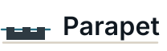
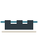
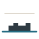

Lockup · Limestone
Four on-brand, hand-authored SVG directions for the Parapet identity. Each is grounded in a named direction from the brand research doc, palette-locked, transparent (no background cage), with the mark and wordmark visually unified. Pick one direction (or a blend) — the winner is then refined into the full variation set in Phase 42.
Selection gate · Phase 41 (LOGO-04)Every direction is judged against the frozen acceptance checklist: transparent · palette-locked · on-brand IBM Plex type · unified mark+type · calm/architectural (not neon) · no primary subtitle · on-metaphor (off the AVOID list) · survives mono + 16px.
Note on type: wordmarks here render in live IBM Plex Sans (with a system fallback) so you can compare directions fairly. The winning wordmark is hand-refined into outlined, font-independent paths in Phase 42 — no font binaries are committed.
The headline metaphor made literal: a crenellated low wall whose openings are signal windows. A Watch Blue sightline runs behind the wall and shows through the gaps — telemetry seen through the parapet. Mark and wordmark stand on one shared stone ground line.


No separate icon. The wordmark itself wears a stepped parapet crown and stands on a single calm sightline — the metaphor is built into the logotype. The most "designed type treatment," and the one that reads as one indivisible unit.
A bold squared P crowned with crenellation, with a Watch Blue signal slot passing through its counter (the "signal slot" idea). Built for square contexts — GitHub avatar, Hex icon, favicon — then paired with the wordmark for the horizontal lockup.
The most restrained: a low parapet wall and the wordmark share one continuous Watch Blue sightline, with a stone horizon above (seeing over the edge, not hiding behind a fortress). The shared line physically bridges mark and type.
